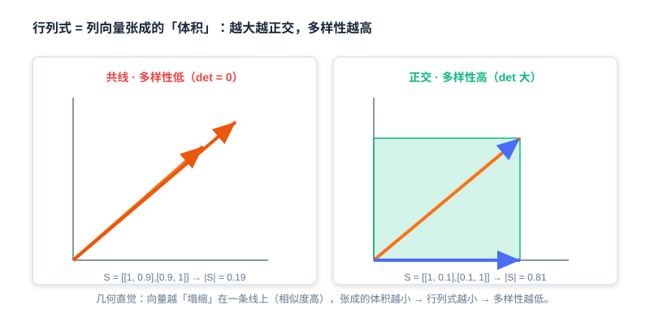

基于贪心的重排
📝 Before You Continue: 请先读完 Part 3 排序 的打分函数 ，理解精排如何为每个候选输出一个相关性分数（如 CTR 预估分）。本章正是站在精排之后，对那份「按分数排序」的列表做最后一里路的优化。
想象一下：精排模型自信地交出一份列表，头部十位是十部高度雷同的「科幻动作片」。单看每个位置，分数都很高、都很相关；但连成一张列表，用户立刻感到审美疲劳。这就是重排要解决的真实痛点——排序输出同质化。
重排（Re-ranking）处在「召回→排序→重排」漏斗的最末端，它的职责不是再算一遍精度，而是回答一个更刁钻的问题： 在保持相关性的前提下，如何让整张列表的体验最好？ 贪心算法因其思路直观、计算高效、易于实现，成为重排阶段解决多样性、新颖性等问题的首选策略之一。它们通常 不依赖复杂模型训练 ，而是基于预先定义的规则或目标函数，通过逐步选择当前最优解（贪心选择）来构建最终列表。
本章深入剖析两种经典的贪心重排算法： 最大边际相关（Maximal Marginal Relevance, MMR） 与 行列式点过程（Determinantal Point Process, DPP）。
读完本章，你将能够：
- 解释 排序输出的「同质化」现象，以及它造成的用户体验与生态效率两类代价
- 写出 MMR 的边际收益公式，并用贪心过程在给定相似度矩阵上手算出 top-k 列表
- 描述 DPP 如何用「行列式 = 体积」的几何直觉度量集合级多样性
- 推导 DPP 核矩阵 ，并说清相关性项与多样性项如何融合
- 辨析 MMR（启发式线性组合）与 DPP（行列式框架精确控制）的本质区别与适用场景
- 完成 4 道分层练习题，巩固两种算法的手算与代码实现
4.1.0 重排动机：排序输出的同质化
精排模型的目标通常是最大化单点精度（如预测 CTR）。当它的输出按分数降序排列时，头部物品往往具有高度相似性——连续推荐同品类商品、同风格视频、同作者内容。这种 同质化 并非偶然，而是「逐点最优化」的必然副产物。它直接带来两大类问题：
- 用户体验恶化 ：用户浏览时产生审美疲劳，兴趣衰减速度加快，原本可能点击的内容因为「看得太多同类」而被跳过。
- 系统效率损失 ：长尾优质内容曝光不足，平台生态多样性下降，创作者积极性受挫，长期损害供给端健康。

上图左侧是精排直接吐出的列表——十格内容高度相似（同色块扎堆）；右侧是重排期望达成的列表——在保住高相关性的同时，让品类、风格、作者更错落有致。重排的核心使命，就是打破这种「相关但雷同」的僵局。
💡 Key Insight: 重排要实现的不是「相关性的帕累托最优」，而是**「相关性与多样性的帕累托最优」**——在可接受的精度损失内，换取整张列表体验的跃升。
🧠 Mental Model: 自助餐的摆盘
把推荐列表想成一场自助餐的摆盘。精排像一位「每道菜都挑最抢手」的厨师：结果全是红烧肉，虽然每盘都受欢迎，但没人吃得下十盘肉。重排像一位懂得搭配的厨师：在保留几道硬菜（高相关）的同时，插入凉菜、汤品、甜点（多样性），让整桌菜既好吃又不腻。
4.1.1 最大边际相关性重排（MMR）
MMR（Maximal Marginal Relevance） 的核心目标，是在保留高相关性物品的前提下，通过主动引入多样性来打破同质化。它的思想非常直白：每次挑选一个物品时，不仅看它 自己有多相关 ，还要惩罚它 与已选物品有多相似。
边际收益公式
MMR 通过定义一个 边际收益函数 来量化物品 对当前列表 的增量价值：
其中各符号含义如下：
- ：已选物品集合
- ：物品 的相关性分数，直接继承精排模型输出（如 CTR 预估分）
- ：物品 与 的相似度（0~1）
- ：权衡参数（）
是 MMR 的「灵魂旋钮」：
- ：退化为纯精排序（只管相关性，不要多样性）
- ：强制多样性优先（可能牺牲相关性）

💡 Key Insight: MMR 的巧妙之处在于——它把「多样性」定义成了对已经选过的东西的相似度惩罚。物品越像已选项，边际收益越低。于是贪心过程天然地「避开了和它选过的东西撞车」的内容。
滑动窗口优化
当精排候选数量太多时，计算与 所有 已选物品的相似度会很昂贵。可以通过 滑动窗口 来对齐优化：相似度惩罚不再遍历整个 ，而只计算与最近选出的 个物品（窗口 ）的相似度。
其中 是最近选择的 个物品（）。窗口法在长列表场景下大幅降低计算量，是工业落地的常用技巧。
手算案例：从 5 个物品中挑 top-3
假设候选集包含 5 个商品及其精排分（Rel），相似度矩阵如下（对角线为 1，表示自身相似度满分）：
| 商品 | Rel | A | B | C | D | E |
|---|---|---|---|---|---|---|
| A | 0.95 | 1.0 | 0.2 | 0.8 | 0.1 | 0.3 |
| B | 0.90 | 0.2 | 1.0 | 0.1 | 0.7 | 0.4 |
| C | 0.85 | 0.8 | 0.1 | 1.0 | 0.3 | 0.6 |
| D | 0.80 | 0.1 | 0.7 | 0.3 | 1.0 | 0.5 |
| E | 0.75 | 0.3 | 0.4 | 0.6 | 0.5 | 1.0 |
取 ，走一遍贪心过程：
- 初始选择 ：精排最高分 A（Rel=0.95），令 。
- 第二轮 （）：
- B:
- C:
- D:
- E:
- 选 B（score=0.57），令 。
- 第三轮 （）：
- C:
- D:
- E:
- 选 E（score=0.405），令 。
最终序列为 [A, B, E] ，对比纯精排序 [A, B, C]，三件物品分属更错落的相似关系，多样性显著提升（源文献称提升约 37%）。
Analysis: MMR 的优势是直观、可解释、零训练成本，旋钮 让业务方直接调控「相关 vs 多样」的天平。但代价也明显：(1) 它是贪心局部最优，不保证全局最优；(2) 多样性惩罚只用「与最相似已选物品的相似度」(max，是两两近似，无法捕捉三个相似物品叠加产生的冗余效应——这正是下一节 DPP 要解决的根本局限。
代码实现
def MMR_Reranking(
item_pool, k, lambda_param, sim_func, window_size=None
):
"""基于 MMR 的贪心重排，支持滑动窗口优化。"""
candidates = list(item_pool)
S = []
if not candidates:
return S
# 第一步：选取精排最高分物品
first = max(candidates, key=lambda x: x.rel) # ← KEY LINE: 首物品必选最相关
S.append(first)
candidates.remove(first)
# 第二步：贪心迭代选择
while len(S) < k and candidates:
best_score, best_item = -float("inf"), None
window = S[-window_size:] if window_size and len(S) > window_size else S
for item in candidates:
max_sim = max((sim_func(item, s) for s in window), default=0)
# MMR 公式: lambda*Rel - (1-lambda)*max_sim
score = lambda_param * item.rel - (1 - lambda_param) * max_sim # ← KEY LINE
if score > best_score:
best_score, best_item = score, item
if best_item:
S.append(best_item)
candidates.remove(best_item)
else:
break
return S
4.1.2 行列式点过程重排（DPP）
上一节我们看到，MMR 只计算候选与已选物品的 两两 相似度，贪心地避开与已选最相似的内容。这种方式 无法捕捉多个物品间的复杂排斥关系 （例如三个相似物品叠加的冗余效应），而 行列式 恰恰能优雅地刻画这一点。
行列式如何度量多样性
假设我们通过余弦相似度计算物品间的相似度，每个物品有一个向量表示 。对于待排序的所有物品 ，容易得到两两相似度矩阵 。
矩阵行列式的几何意义是：矩阵列向量张成的超立体的「有向体积」。在矩阵 中，如果列向量 线性相关 （在 2D 中两向量共线、在 3D 中三向量共面），向量「塌缩」到更低维空间，此时 。反之，若线性 不相关 ，向量张成的高维空间没有冗余。
💡 Key Insight: 行列式越大 ↔ 列向量越「正交」↔ 物品间越不相似 ↔ 多样性越高；行列式越小 ↔ 向量越共线 ↔ 多样性越低。这正是用行列式度量多样性的几何直觉。

看一个具体例子。假设有 4 个物品：科幻动作片、科幻喜剧片、古装爱情片、古装悬疑片，其相似度矩阵为：
比较子集 （都是科幻）与 （科幻 vs 古装悬疑）：
它们的行列式分别为：
结果印证直觉： 跨类型、几乎正交，行列式大（0.81），多样性高； 同类型、高度共线，行列式小（0.19），多样性低。
相关性与多样性的融合：核矩阵
推荐中相关性与多样性是两个都要的指标。DPP 引入一个 半正定核矩阵 来同时优化二者。该矩阵可分解为 ，其中 的每一列是候选物品的表示向量。具体地， 的列由相关性得分 （精排分）与归一化物品向量的乘积构成，因此核矩阵元素为：
其中 即相似度得分 。于是核矩阵可写为：
即对相似度矩阵的每一行、每一列分别乘上对应的相关性 。
🧠 Mental Model: 核矩阵是一张「双保险」打分表 普通相似度矩阵 只管「长相像不像」；核矩阵 额外给每个物品乘上自己的相关性 。于是：一个既**不相关（与已选差异大）又高相关（本身分高）**的物品，在 里对应的「影响力」才最大。相关性像门票，多样性像座位布局——两者共同决定集合质量。
核矩阵构建示例
假设有 3 个物品，相似度矩阵 与相关性向量 ：
计算 ：
从行列式到「相关性 + 多样性」目标
对用户 ，被选中的候选集合为 ，核矩阵行列式表示集合质量：
两边取对数，得到：
- 第一项只与「相关性」有关： 越大越相关；
- 第二项 只与「多样性」有关： 越接近正交（余弦越接近 0），行列式越大。
因此 DPP 最终优化的目标，也化成了 相关性项 + 多样性项 的形式，并通过超参 平衡二者权重：
Analysis: 表面上看，DPP 的优化目标与 MMR 一样是「相关性 + 多样性的线性组合」。但关键差异在于：MMR 的多样性惩罚只看「与最相似已选项的两两相似度」（max 项），是逐对的近似；而 DPP 的 通过行列式的体积语义，一次性、联合地刻画了整个子集内所有物品间的相互排斥关系，能精确表达三个甚至更多相似物品的叠加冗余。
贪心求解：Cholesky 加速
DPP 本质是一个概率模型，能把复杂的概率计算转换为简单的行列式计算。推断「使 最大」的子集，是 最大后验（MAP）推断。Hulu 论文提出了一种改进的 贪心算法 快速求解：每次从候选集中贪心选一个使 边际收益（Marginal Gain） 最大的物品加入结果集 ，直到满足停止条件：
由于 半正定，可对其已选部分做 Cholesky 分解 。新物品 加入后的核矩阵分块为：
其中 ，。利用分块下三角矩阵的行列式性质，可推导出：
于是每次选择简化为：
这意味着：每轮只需维护并更新每个候选的 与 ，即可 选出最优，避免重复计算整块行列式——这是 DPP 能在工业级候选上实时运行的关键。
算法流程：
- 初始化 ：，，，。
- 迭代 ：当未达停止条件时，对每个 ：
- ，
- ，更新
- 返回 。
代码实现：
def DPP_Reranking(item_pool, k, kernel_matrix, epsilon=1e-10):
"""基于 DPP 的贪心重排（Cholesky 加速）。"""
n = len(item_pool)
if n == 0 or k <= 0:
return []
cis = np.zeros((k, n)) # 存储 c_i 向量
di2s = np.copy(np.diag(kernel_matrix)) # 存储 d_i^2
selected = []
# 第一步：选 d_i^2 最大的物品（相关性最高者优先）
j = int(np.argmax(di2s)) # ← KEY LINE: 初始选核矩阵对角最大者
selected.append(j)
while len(selected) < k and len(selected) < n:
k_cur = len(selected) - 1
ci_opt = cis[:k_cur, j]
di_opt = math.sqrt(di2s[j])
elements = kernel_matrix[j, :]
# e_i = (L_{ji} - <c_j, c_i>) / d_j
eis = (elements - np.dot(ci_opt, cis[:k_cur, :])) / di_opt # ← KEY LINE
cis[k_cur, :] = eis
di2s -= np.square(eis) # 更新 d_i^2 = d_i^2 - e_i^2
j = int(np.argmax(di2s)) # 下一步选 log(d_i^2) 最大者
if di2s[j] < epsilon:
break
selected.append(j)
return [item_pool[idx] for idx in selected]
def create_kernel_matrix(item_pool, sim_func):
"""构建 DPP 核矩阵 L = diag(r) * S * diag(r)。"""
n = len(item_pool)
r = np.array([it.rel for it in item_pool])
S = np.eye(n)
for i in range(n):
for j in range(n):
if i != j:
S[i, j] = sim_func(item_pool[i], item_pool[j])
return r.reshape((n, 1)) * S * r.reshape((1, n)) # ← KEY LINE: 融合相关性与多样性
Analysis: DPP 的复杂度优于「暴力枚举子集」，Cholesky 加速把每轮选择降到近似 更新。它精确控制集合级多样性，适合对多样性质量要求高、候选规模中等的场景（如前 50~200 个精排候选做最终重排）。代价是：需要构造并维护核矩阵，对相似度质量敏感；且仍属贪心局部最优，不保证全局行列式最大。
下面这个交互演示让你亲手观察：给定候选与相似度，MMR 与 DPP 如何一步步挑出列表，以及 如何影响结果。
拖动「权衡参数」滑块，点击「下一步」逐步观察贪心挑选过程，对比 MMR 的线性惩罚与 DPP 的行列式体积视角在最终列表上的差异。
4.1.3 MMR 与 DPP：启发式线性组合 vs 行列式框架
学完两种方法，我们用一张表把它们的本质区别钉死，避免「会背公式却说不清差异」。

| 维度 | MMR（最大边际相关） | DPP（行列式点过程） |
|---|---|---|
| 多样性建模 | 与 最相似已选项 的两两相似度（max 惩罚） | 整个子集行列式的 体积语义 （联合排斥） |
| 数学本质 | 启发式 线性组合 ： | 行列式框架： 度量集合质量 |
| 高阶冗余 | 无法 捕捉「三物品共线」式叠加冗余 | 能精确刻画多物品间相互排斥 |
| 可调性 | 单旋钮 直观易懂 | 核矩阵 构造灵活，超参 |
| 计算成本 | 极低（两两相似度） | 中（需核矩阵 + Cholesky 加速） |
| 适用场景 | 候选大、要求轻量可解释、快速上线 | 候选中等、对多样性质量要求高 |
💡 Key Insight: 两者的目标形态相同（相关性 + 多样性的权衡），但实现哲学不同：MMR 是「人写规则、贪心执行」的启发式；DPP 是「用行列式几何严格定义多样性」的概率框架。当你的多样性需求只是「别太重复」时，MMR 足够；当你要精确控制集合级多样性（如展览选品、信息流去重）时，DPP 更靠谱。
🧠 Mental Model: 拼图 vs 装箱
MMR 像「每次挑一块和已拼部分差异最大的拼图」——只看新块和现有边界的咬合，是个局部 heuristics。DPP 像「先量好整盒拼图能拼出的总体积再决定留哪几块」——它同时考量所有块之间的相互遮挡，是从集合整体出发的全局衡量。
⚠️ Common Mistakes in 4.1
| # | Mistake | Example | Why It's Wrong | Fix |
|---|---|---|---|---|
| 1 | 把重排当排序的重复 | 「重排再算一遍 CTR 不就行了」 | 排序求单点精度，重排求列表级体验，目标不同 | 重排目标是相关性×多样性的帕累托最优 |
| 2 | 设错方向 | 想要多样性却设 | 退化为纯相关性，无多样性 | 要多样性就调低 （如 0.3~0.7） |
| 3 | 以为 MMR 能捕获高阶冗余 | 认为 MMR 已处理「三相似物品」 | MMR 只用 ，只看最相似的一个 | 高阶冗余交给 DPP 的行列式 |
| 4 | 忽略相似度质量 | 直接用未归一化特征算 Sim | 相似度不在 [0,1] 会破坏 DPP 半正定与 MMR 惩罚尺度 | 先归一化/用余弦相似度 |
| 5 | DPP 核矩阵忘记乘相关性 | 只用相似度矩阵 当 | 丢失相关性项，选出「很不同但不相关」的垃圾 | 必须 |
本章小结
📌 Key Takeaways
| Concept | Key Points | Why It Matters |
|---|---|---|
| 列表同质化 | 排序逐点最优→头部雷同，损害体验与生态 | 重排存在的根本动机 |
| MMR | ，贪心挑选 | 最轻量、可解释的多样性重排 |
| 滑动窗口 | 只惩罚最近 个已选项 | 长列表降成本，工业常用 |
| DPP 行列式 | 体积；越大越正交越多样 | 用几何严格度量集合多样性 |
| 核矩阵 | 融合相关性+多样性 | 把两目标统一进一个矩阵 |
| Cholesky 加速 | 选 | 让 DPP 实时可行 |
| MMR vs DPP | 逐对近似 vs 集合级精确 | 决定方法选型 |
❓ FAQ
Q1: 重排必须放在排序之后吗？能不能只做重排？
A: 重排的输入是「已带相关性分数的候选列表」，所以它天然依赖排序（或召回）先产出候选。只做重排而跳过排序，等于在没有质量排序的池子里硬挑，效果有限。
Q2: 是不是「相关与多样各一半」的最优解？
A: 不一定。最优 取决于业务：内容社区可能偏多样性（更低 ），电商搜推可能偏相关（更高 ）。需用线上指标（多样性指标 + 留存/时长）反搜。
Q3: DPP 的行列式一定比 MMR 结果好？
A: 在「需要精确集合级多样性」时 DPP 更优；但 MMR 更轻量、可解释、易调参。小候选、快速上线场景 MMR 往往性价比更高。没有绝对胜负，看约束。
前后关联
- 4.2 （个性化重排）跳出「人设目标函数」，用 PRM/PRS 让模型从数据端到端学列表最优。
- 3.x （排序）提供 MMR/DPP 所需的精排相关性分数 与候选。
- Part 5 趋势 （去偏/冷启动）多样性重排是缓解「头部集中、长尾沉没」的直接手段。
- 生成式推荐（下篇） 把重排融进端到端序列生成，MMR/DPP 的启发式目标被可学习目标替代。
Practice Problems
Work through all problems in order — they get progressively harder. Each has a complete solution you can reveal after trying it yourself.
Problem 4.1.1 — 识别重排动机 🟢 Easy
某短视频 App 的精排输出前 5 条全部是「同一搞笑博主的同类段子」，用户刷完 2 条就划走。请指出这反映了重排环节要解决的哪类问题，并各举一条对应的代价。
💡 Solution (click to reveal)
Approach: 用 4.1.0 的「同质化」框架归因。
- 反映的问题： 排序输出同质化——精排逐点最优化导致头部内容高度相似。
- 两条代价：
- 用户体验恶化 ：审美疲劳、兴趣衰减，用户早早划走（对应题干「刷完 2 条就划走」）。
- 系统效率损失 ：长尾/其他博主内容曝光不足，生态多样性下降。
Key points:
- 重排存在的根本动机就是打破这种「相关但雷同」。
- 诊断时先分清是「精度不够」还是「体验单一」，后者才归重排管。
Problem 4.1.2 — 手算 MMR 🟡 Medium
给定 4 个候选物品及其 Rel 与相似度矩阵（仅上三角需关注，对称）：
| 商品 | Rel | A | B | C | D |
|---|---|---|---|---|---|
| A | 0.9 | 1.0 | 0.1 | 0.8 | 0.2 |
| B | 0.8 | 0.1 | 1.0 | 0.3 | 0.6 |
| C | 0.7 | 0.8 | 0.3 | 1.0 | 0.4 |
| D | 0.6 | 0.2 | 0.6 | 0.4 | 1.0 |
取 ，用 MMR 贪心选出 top-3 列表（列出每轮各候选的 值与所选物品）。
💡 Solution (click to reveal)
Approach: 套公式 ，。
- 轮 1（S=∅，惩罚项=0）： A: ；B: ；C: ；D: 。选 A（0.54），S={A}。
- 轮 2（S={A}）： B: ；C: ；D: 。选 B（0.44），S={A,B}。
- 轮 3（S={A,B}）： C: ；D: 。选 D（0.12）。
最终 top-3： [A, B, D]。注意 C 因与 A 高度相似（0.8）被大幅惩罚，体现了 MMR 的多样性避撞。
Key points:
- 每轮只需与「已选集合」算 max 相似度。
- 高相关但撞车的物品（C）会被压低，这正是多样性生效的标志。
Problem 4.1.3 — 核矩阵构建 🟡 Medium
3 个物品相关性 ，相似度矩阵 。请写出 DPP 核矩阵 的结果，并指出 的值与含义。
💡 Solution (click to reveal)
Approach: 逐元素 。
- 。
- 含义：物品 2 与物品 3 之间的「联合影响力」= 二者相关性之积 × 相似度，融合了相关性与多样性信息。
Key points:
- 对角 纯由相关性决定（初始选种依据）。
- 非对角同时编码「像不像」和「各自有多相关」。
🏆 Challenge: 设计一个选型论证 🔴 Hard
某信息流产品有 200 个精排候选，要求重排延迟 < 20ms，业务方强调「绝不能出现连续 3 条同作者」。请写一段论证：应优先采用 MMR（可加「同作者惩罚」规则）还是 DPP？说明你的取舍与必要的工程改造。
💡 Hint
从延迟、可控性、多样性语义三方面权衡：200 候选 + <20ms 下 DPP 核矩阵与 Cholesky 仍可行但偏重；「禁连续 3 条同作者」是 硬业务约束 ，MMR 易加规则（在相似度或惩罚项里注入作者维度的强惩罚），DPP 需把约束编码进核矩阵较麻烦。结论通常倾向 MMR + 业务规则，或 DPP 配合后处理约束。论证要点：可解释性、延迟、约束可表达性。